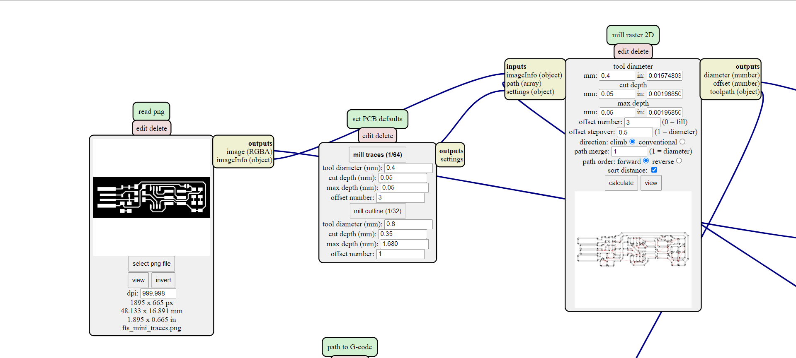
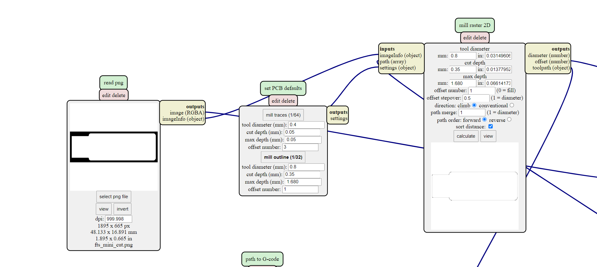
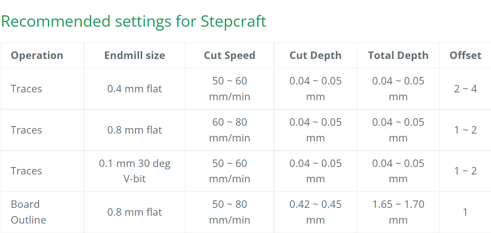
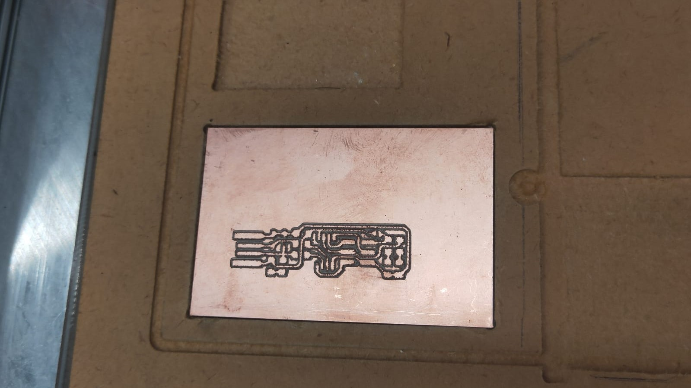
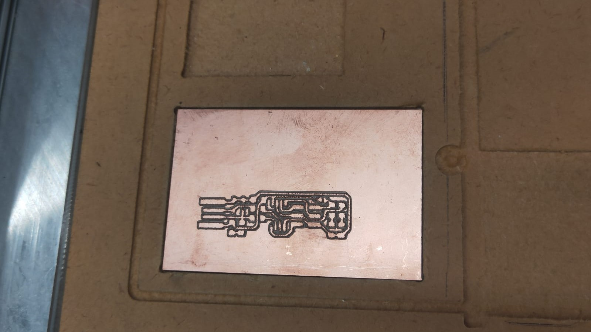
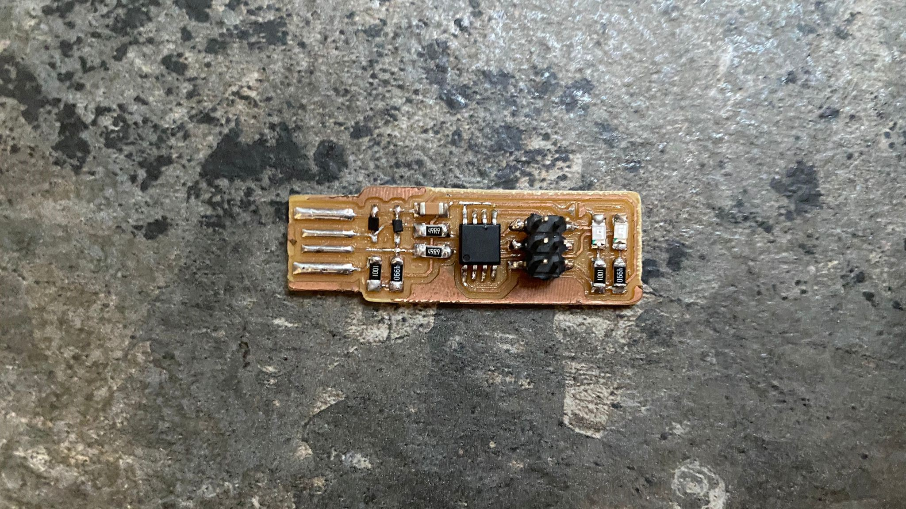
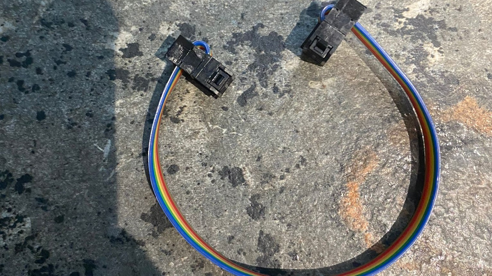

Electronics Production
In this chapter, we learnt how to operate a CNC machine to mill out a printed circuit board (PCB). We then soldered various components onto the pcb to creat the in-system programming (ISP) programmer.
What is a pcb?
Printed Circuit Board or PCB are used to configure all the electronic components of a device together. The traces of a circuit board connects all of the electrical signals from one junction to another. In our last module, we used an Arduino to help us assemble our circuit. Now going up a level higher, we learnt how to build our own PCB. This means we have the flexibilty to design and customise our microcontroller board for better product integration.
Step 1: EAGLE
The first step to creating our own pcb is to draw out our electrical circuit. Hence, we would be using EAGLE to draw out our electrical circuit and from there, i generated a png file of the traces and outline.


Step 2: G-code
In the second step, after obtaining a png file of the circuit layout and outline, i used the mods to set the G-code. To enable the programme, right click to begin > programs > open programs > G-code: mill 2D pcb. On the programme itself, i clicked on "mill traces" for the traces and "mill outline" for the outlines. Making sure to adhere to certain settings like cut depth and tool diameter provided.
  
Step 3: Milling
After the G-code has been generated, i could prepare a board to start the milling process, but before that, i had to set the X and Y origin and thereafter the Z axis in which a probe was used. The next step was to add paste the board onto the cardboard base with double-sided tape and masking tape to make sure that the board does not shift during the milling process.
>

The correct cutter must then be chosen for the correct cutting process, 0.1mm 30 degree V bit for etching and a 0.8mm end mill bit for cutting the outline.


The 0.1mm 30 degree V bit was then installed and before starting the etching process on the board.
.jpeg) 

After the etching process is completed, the outline can now be milled. Hence, i changed the cutter to the 0.8mm end mill bit and without changing the origin of the X and Y axis, the Z axis was recallibrated, before the outline of the board was milled.

The board was then sanded slighly with fine sand paper to remove any burs created during the milling process.
Step 4: Soldering
After the board was sanded, the components was ready to be soldered onto the board.
I reffered to Brian’s board image and schematic to determine if the components are placed correctly in the right orrientation.

And with a pair of tweazers and a solderin iron equipped with the smallest tip, i started to solder the components onto the board making sure to use as little solder as possible.

The cable to connect the ISP programmer to another programmer was also created using 2 heads and some wires
